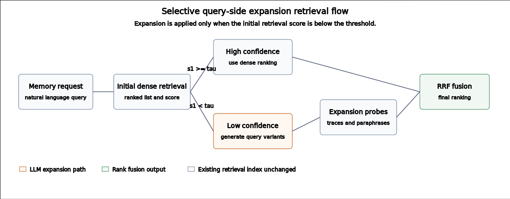

RESEARCH ARTIFACT · 2026
Selective Query-Side Expansion for Long-Horizon Agent Memory Retrieval
1Korea University of Technology and Education (KOREATECH)

Abstract
Long-horizon agents often retrieve memories written in a different language from the current query. Query expansion can improve recall, but expanding every query increases cost and can reduce precision. We study Selective Query-Side Expansion (SQE), a retrieval-time intervention that first runs dense retrieval, estimates whether the result is reliable, and expands only uncertain queries using trace-style probes and paraphrases.
Across eight independently rebuilt memory-index seeds and 4,000 paired queries, Selective-QE reaches 69.4% mean Recall@5 while expanding 46% of queries. The result is a cost-aware retrieval variant: it remains close to dense retrieval, improves over Hybrid-RRF in this evaluation, and is statistically tied with the executed random-budget control.
Contributions
- A selective query-expansion method for long-horizon agent memory retrieval.
- An evaluation across eight independent memory-index seeds with paired query comparisons.
- A release containing the paper, scripts, summaries, audits, and reproducibility artifacts.
Results
The released multiseed report is loaded below. Use the controls to inspect another metric or a single memory-index seed.
Method comparison
Per-seed results
Expansion cost and recall
Lower expansion is better. Selective-QE stays close to dense retrieval while using roughly half the expansion budget of Always-Expand.
Method
SQE changes the query at retrieval time. The underlying memory-writing policy and memory index remain unchanged.
- Retrieve. Run dense retrieval over the existing trace store.
- Gate. Estimate whether the first retrieval pass is sufficient.
- Expand. Generate trace probes and paraphrases for uncertain queries.
- Fuse. Retrieve each variant and combine ranked lists with reciprocal-rank fusion.
Interpretation. Expansion is useful when query language and stored execution traces use different registers. It is not free: selective gating is intended to preserve much of the benefit without expanding every query.
Reproducibility
All release materials are organized in the repository rather than hidden behind the visualization.
- Experiment scriptsDataset preparation, retrieval, evaluation, and audit tooling.
- Multiseed evidenceIndependent seed summaries, paired tests, and win/loss analysis.
- Paper source and figuresLaTeX source, PDF, references, and evidence inventories.
- Hugging Face datasetCompanion evaluation materials and dataset card.
Citation
DIEI, S. Selective Query-Side Expansion for Long-Horizon Agent Memory Retrieval. 2026.